Dear Delegates, Faculty Advisors, and Esteemed Members of the Organization Teams,
It is with great pleasure and immense excitement that I extend a warm welcome to each of you for the 1st Official Session of TAKEVMUN.
As per my position of Secretary-General, I am incredibly proud to see the efforts of all our teams over the past few months come to fruition. I am confident that this conference will provide an inspiring platform for addressing global issues through diplomacy, communication, and mutual understanding.
In times where citizens’ daily lives are increasingly shaped by politics and international relations, we need capable, empathetic and virtuous diplomats now more than ever. This conference will not only be an opportunity to address international challenges, but one meant to nurture future leaders.
I would also like to express my deepest gratitude to our faculty advisors, our hardworking members, and everyone behind the scenes whose unyielding commitment has brought this event to life. Events of this scale are powered by passion, and we are grateful for your support.
To all the delegates: seize this moment. Challenge your own assumptions, hone your leadership and communication skills, and build connections that will last long after the closing ceremony.
Let this first session be a journey defined by inspiration, intellectual curiosity, and shared ambition. Together, let us work toward a vision of progress and understanding, leaving a legacy for future generations to build upon.
Best wishes,
Değerli Delegeler, Saygıdeğer Danışman Öğretmenler ve Sevgili Ekip Arkadaşlarım,
Hepinizi konferansımızda görmekten büyük mutluluk duyuyorum. Aylardır üzerinde çalıştığımız bu organizasyonun sonunda sizlerle buluşacak olması, benim ve tüm ekibimiz için oldukça heyecan verici.
Hazırlık sürecinde akademik ve organizasyon ekiplerimizle pek çok ayrıntı üzerine düşündük, zaman zaman zorlandık ve birlikte çözüm bulduk. Şimdi ise bütün bu emeğin, sizlerin katılımıyla anlam kazanacağı günlere geldik. Dileğim, buradan hem yeni şeyler öğrenmiş hem de güzel anılar biriktirmiş olarak ayrılmanız.
Konferans boyunca dünyanın farklı bölgelerini ilgilendiren sorunları tartışacak, temsil ettiğiniz ülkelerin görüşlerini savunacak ve ortak kararlar almaya çalışacaksınız. Bazen bir öneriye katılmayacak, bazen de başka bir delegenin söyledikleri üzerine kendi düşüncenizi yeniden değerlendireceksiniz. Bence bu deneyimi değerli kılan da tam olarak bu: birbirimizi dinlemek ve farklı düşündüğümüz insanlarla birlikte bir sonuca ulaşabilmek.
Özellikle ilk kez bir MUN konferansına katılan delegelerimize söylemek isterim ki heyecanlanmanız, söz alırken çekinmeniz ya da hata yapmanız çok doğal. Kendinize zaman tanıyın ama fikirlerinizi paylaşmaktan da vazgeçmeyin. Söylediğiniz bir cümle, komitenizde yeni bir tartışmanın başlamasını sağlayabilir. Daha deneyimli delegelerimizin de bilgi ve tecrübeleriyle bu sürece katkıda bulunacağına inanıyorum.
Yoğun tartışmaların ve oturumların arasında birbirinizi tanımaya da vakit ayırmanızı umuyorum. Konferans bittiğinde hatırlayacağınız şeyler arasında başarılı bir konuşmanın yanında, bir teneffüste başlayan sohbetin ya da birlikte güldüğünüz bir anın da yer almasını isterim.
Bu süreçte emeğini ve desteğini esirgemeyen danışman öğretmenlerimize, akademik ve organizasyon ekiplerimize içtenlikle teşekkür ederim. Hazırlıkların her aşamasında sorumluluk alan ekip arkadaşlarımla birlikte çalışmış olmaktan mutluluk duyuyorum.
Hepinize kendinizi rahatça ifade edebileceğiniz, yeni dostluklar kurabileceğiniz ve katılmış olmaktan memnuniyet duyacağınız bir konferans diliyorum. Sizi 23-24-25 Ocak tarihindeki konferansımıza bekliyorum.
Sevgilerim ve saygılarımla,
Sehr geschätzte MUN-Beraterinnen und -Berater, liebe Delegierte und Mitglieder unseres Organisationsteams,
es ist mir eine große Freude und Ehre, Sie alle zur diesjährigen TAKEVMUN-Konferenz herzlich willkommen zu heißen. Am 23., 24. und 25. Januar schlagen wir gemeinsam ein neues Kapitel in unserer Konferenz auf. Die monatelangen, intensiven Vorbereitungen unseres akademischen Teams und des Organisationsteams haben die Grundlage für drei Tage geschaffen, die von anspruchsvollen Debatten, inspirierenden Begegnungen und dem gemeinsamen Ringen um zukunftsweisende Lösungen geprägt sein werden.
Model United Nations ist weit mehr als eine diplomatische Simulation. Es bietet eine Plattform, auf der globale Herausforderungen kritisch hinterfragt, unterschiedliche Perspektiven eingenommen und Brücken zwischen verschiedenen Positionen geschlagen werden können. Gerade in einer Zeit tiefgreifender globaler Veränderungen braucht unsere Welt diplomatische Weitsicht, gegenseitigen Respekt und den Mut, innovative Kompromisse zu finden. In den deutschsprachigen Ausschüssen unserer Konferenz werden Sie diese Werte mit Leben füllen: durch präzise Analysen, rhetorisches Geschick und konstruktive Zusammenarbeit.
An unsere Delegierten: Nutzen Sie diese Gelegenheit, um über sich hinauszuwachsen. Bringen Sie Ihre Ideen mit Leidenschaft ein, vertreten Sie Ihre Positionen mit Überzeugung und bleiben Sie dabei stets offen für die Argumente anderer. Neben den intensiven Debatten bietet Ihnen diese Konferenz die Möglichkeit, neue Kontakte zu knüpfen, wertvolle Freundschaften zu schließen und Fähigkeiten weiterzuentwickeln, die Sie auf Ihrem Weg zu verantwortungsbewussten globalen Akteurinnen und Akteuren stärken werden.
Ein besonderer Dank gilt unseren Akademischen Berater und Beraterinnen sowie dem gesamten Organisationsteam, das im Hintergrund mit großem Engagement arbeitet. Ihr unermüdlicher Einsatz und ihre große Hingabe hat diese Konferenz erst möglich gemacht.
Ich wünsche Ihnen allen drei erkenntnisreiche, inspirierende und erfolgreiche Tage bei TAKEVMUN. Lassen Sie uns diese Gelegenheit nutzen, um gemeinsam für eine friedlichere und gerechtere Zukunft nachzudenken, unterschiedliche Standpunkte in einen konstruktiven Dialog zu bringen und konkrete Lösungsansätze zu erarbeiten.
Denn Diplomatie beginnt dort, wo wir bereit sind, einander zuzuhören, unterschiedliche Perspektiven zu verstehen und trotz aller Unterschiede gemeinsam nach Lösungen zu suchen.
Vielen Dank und eine erfolgreiche TAKEVMUN-Konferenz!